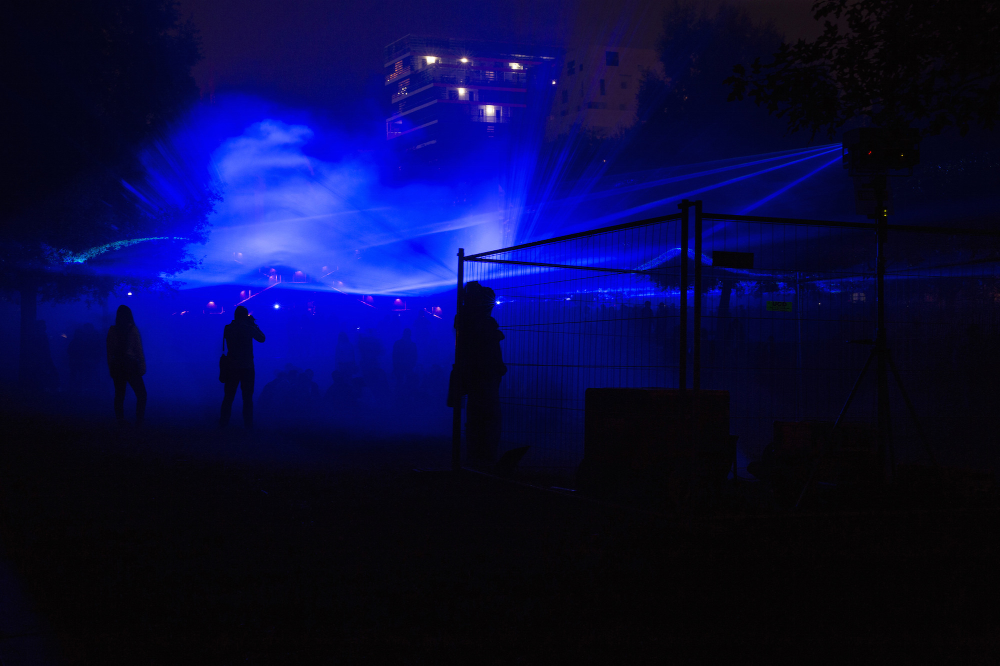
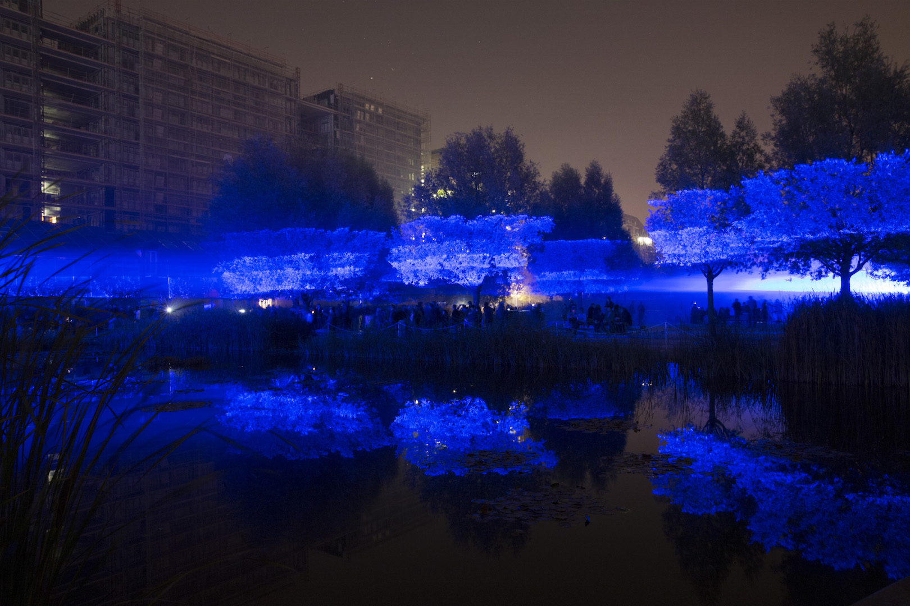
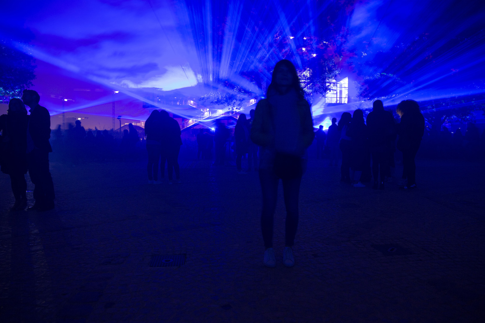

/// 3 Oct 2015 ///
Nuits blanches 2015

Immersion dans l'oeuvre de l'artiste et designer néerlandais Dan Roosegarde, présentée pour la première fois à Paris lors des Nuits Blanches 2015, qui simule la montée des eaux à travers un impressionnant dispositif de lasers bleus : Waterlicht


comments powered by Disqus